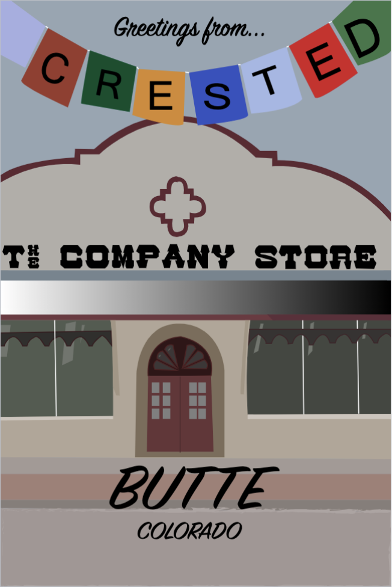
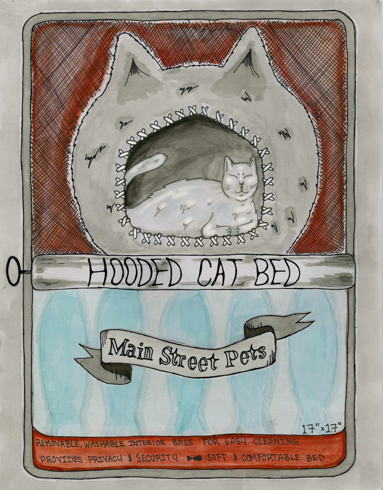
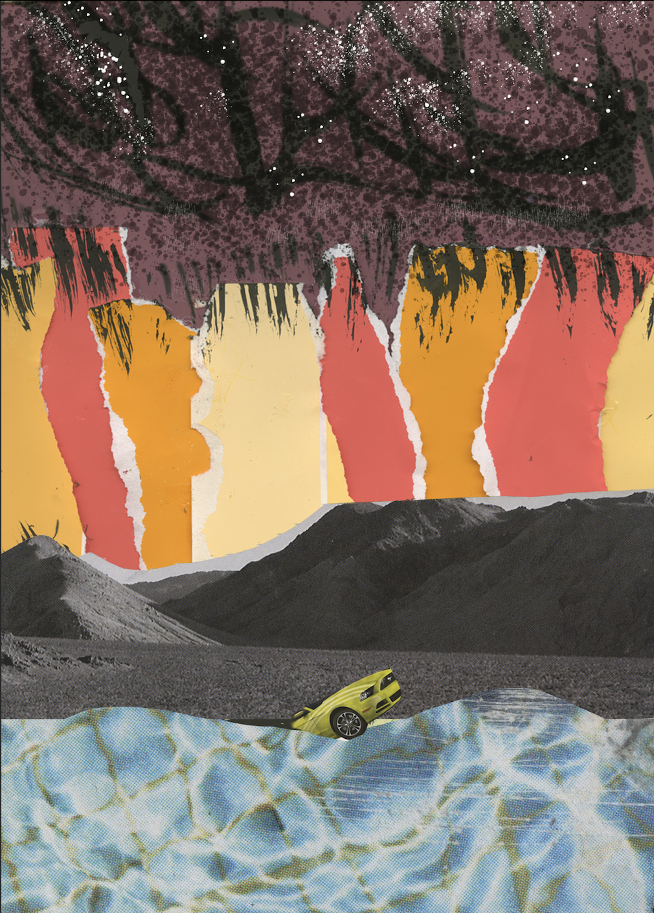
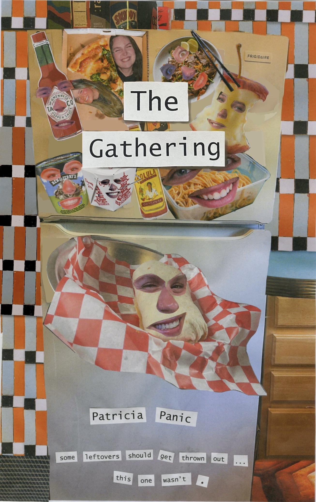

My initials transformed using animal and plant motifs with color schemes.
My initials transformed using animal and plant motifs with color schemes.
 Example of a primary color scheme.
Example of a primary color scheme.

Postcard made for Crested Butte using Illustrator.

A rework of a tag for a cat bed for Main St. Pets.

A mix of analog collaging and photoshop.

A book cover design for a hypothetical children's book.